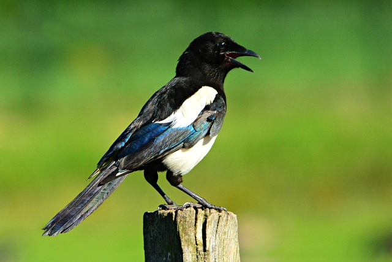
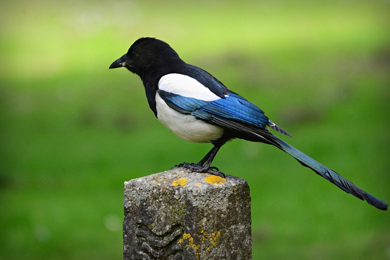

Magpies are birds of the family Corvidae. Like other members of their family, they are widely considered to be intelligent creatures. The Eurasian magpie, for instance, is thought to rank among the world's most intelligent creatures and is one of the few nonmammalian species able to recognize itself in a mirror test. Magpies have shown the ability to make and use tools, imitate human speech, grieve, play games, and work in teams. They are particularly well known for their songs and were once popular as cagebirds. In addition to other members of the genus Pica, corvids considered as magpies are in the genera Cissa, Urocissa, and Cyanopica. Magpies of the genus Pica are generally found in temperate regions of Europe, Asia, and western North America, with populations also present in Tibet and high-elevation areas of Kashmir. Magpies of the genus Cyanopica are found in East Asia and the Iberian Peninsula. The birds called magpies in Australia are, however, not related to the magpies in the rest of the world. Read More
 Magpies have a reputation as thieves out to steal your shiny jewelry or take ornaments from your garden, but new research shows that flashy objects probably repel magpies. The myth seems to have built up without much science to back it up, but the truth could actually be useful. Magpies are capable of wrecking crops by digging for grain, berries and other food, so along with other bird-scaring measures, placing shiny materials in fields might deter magpies and keep crops safe from being upturned and trampled.
While their natural diet is quite broad — including insects, small rodents, grain and berries magpies have been known to steal other birds’ eggs, and even young chicks. In addition, magpies have adapted rather well to suburban living, so they’ll often eat leftover food scraps. But it’s better to provide them with proper bird food to ensure they don’t eat anything poisonous.
European magpies have demonstrated the remarkable ability to recognize their own reflections in mirrors, something that was once thought to be a defining characteristic belonging only to humans. This might not sound that amazing, but out of countless species tested, only four ape species, bottlenose dolphins and Asian elephants have demonstrated this ability. Read More